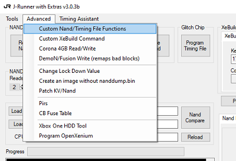
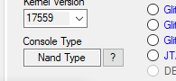
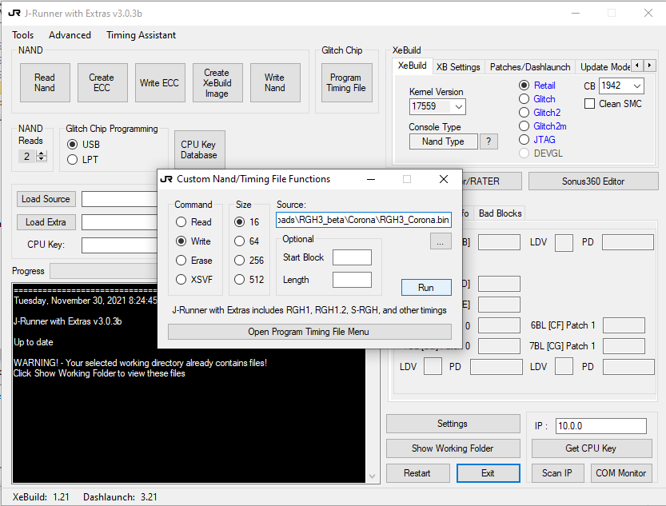
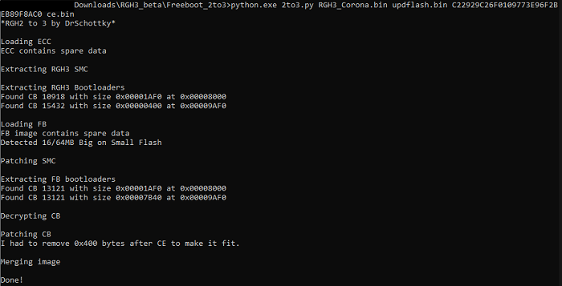
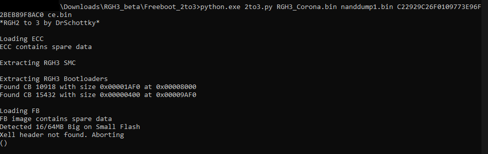
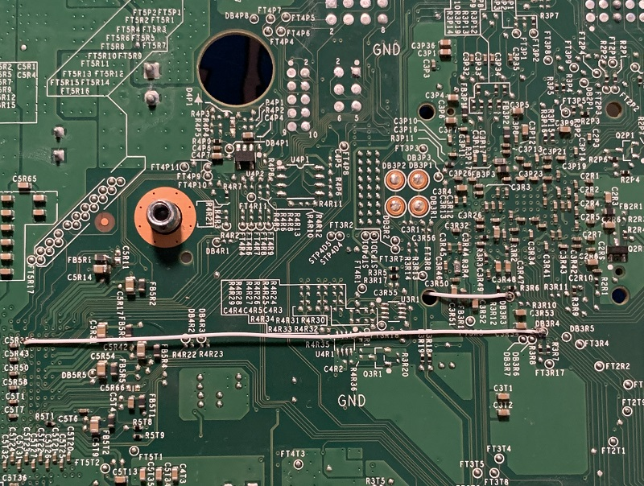
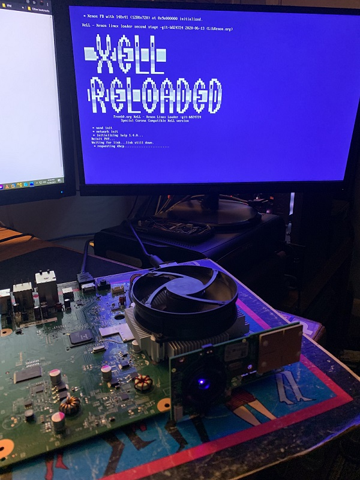

Home
Reset Glitch Hack 3
Pretty neat release by devs 15432, DrSchottky and Octal450
Unlike previous RGH versions that use a modchip, RGH3 glitches the cpu with the motherboards onboard southbridge to run freeboot images
RGH3 demo from 15432:
https://www.youtube.com/watch?v=iVYqxLZ_KL0
Release of the rgh3 ecc images, scripts and diagrams
RGH3 Beta Download
J-Runner by Octal450
Before starting you will need a copy of the consoles modified nand and cpu key
from a previous RGH install
*May not need to have a previous install, haven't tested on stock console*
----------------------------------------------------------------------------
Solder the nand r/w wires to the console and open J-Runner
Open "Custom Nand/Timing File Function" from the advanced menu

In the Command column select "Write" then "Size": 16 for most motherboards
Some Jasper and Corona boards have different size onboard nands
Click the question mark in the Console type section to see motherboard and nand size

Navigate to the RGH3 folder and find the correct RGH3 Ecc.bin file made for the motherboard

Next open J-Runners "Custom Nand/Timing File Functions" prompt
Click run to write to the console
Wiring diagrams from the release here
Building RGH3 Nand image
Similar to XeBuild use the 2to3.py script included in the release to build a complete nand image for the console
RGH2 to 3 by DrSchottky
Open command prompt and navigate to the Freeboot_2to3 folder from the RGH3 release and run the python 2to3 script
May need to install python before running this
Gather the consoles modified Nand & Cpu key
Place the modified nand and RGH3 Ecc in the Freeboot_2to3 folder
Usage: python.exe 2to3.py RGH3_ECC.bin updflash.bin CPUKEY outfile.bin

Xell header not found error when building with unmodified nand

Quick install on a Corona motherboard w/postfix adapter
POST_BUS_1 connected to #5 pad on the adapter

CPU_PLL_BYPASS [1-10k resistor recommended]

Xell
